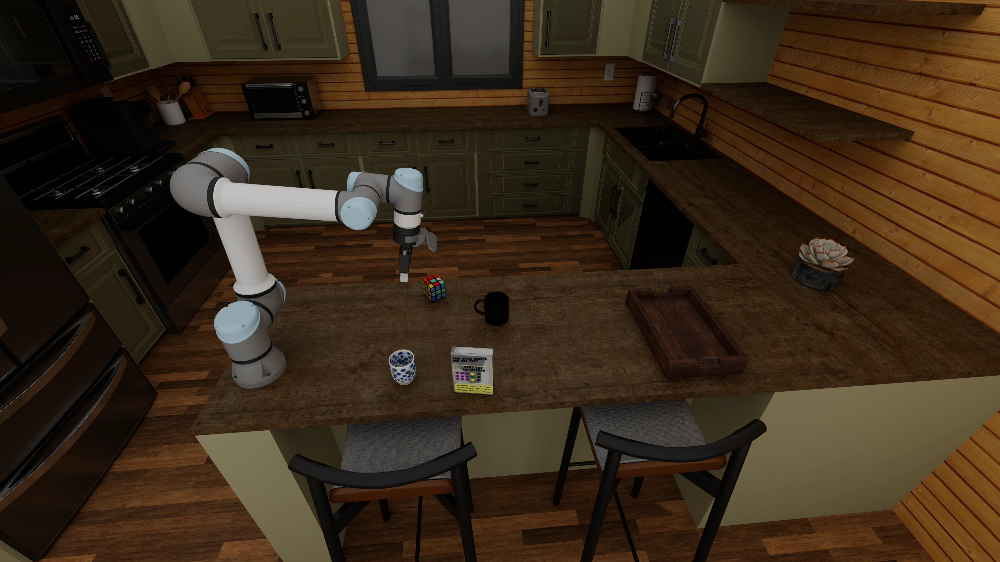

Object dynamics
Rigid objects, irregular geometries, and dynamic-mass objects introduce different physical conditions for a throw.

Grasp. Accelerate. Release.
Reach beyond the robot’s hand.
Throwing turns manipulation into a problem of motion, timing, and object dynamics. After release, the object must travel to its destination without continuous contact with the robot.
This project explores that challenge in simulated kitchen scenes, pairing different object families with stationary and moving destinations.
Explore the collected scenes ↓Paper, author list, and publication links will be added here.
Rigid objects, irregular geometries, and dynamic-mass objects introduce different physical conditions for a throw.
Single and multiple stationary destinations change where the object needs to land.
When the destination moves, the release must account for where it will be when the object arrives.
Three object families meet three destination settings. Explore the rendered scenes.